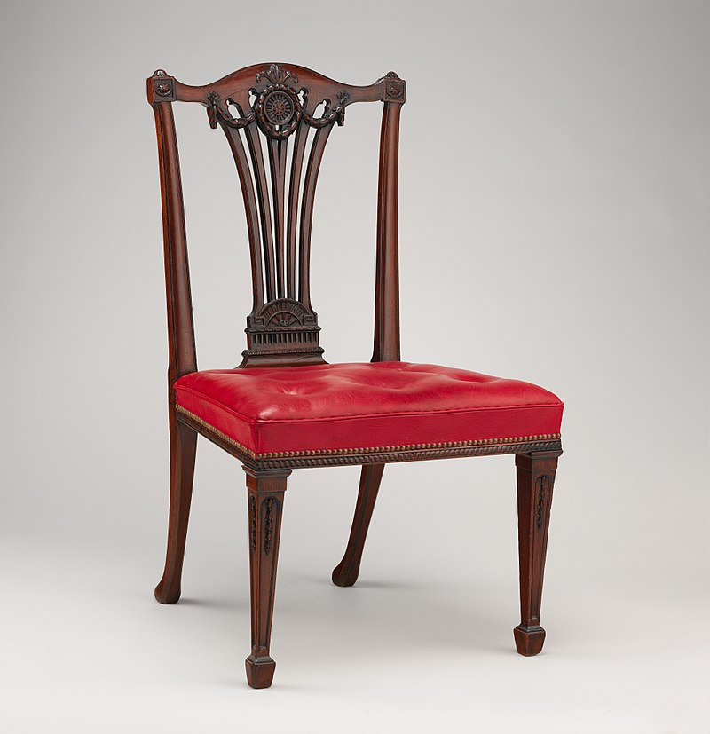

Chair
One of the basic pieces of furniture, a chair is a type of seat. Its primary features are two pieces of a durable material, attached as back and seat to one another at a 90° or slightly greater angle, with usually the four corners of the horizontal seat attached in turn to four legs—or other parts of the seat's underside attached to three legs or to a shaft about which a four-arm turnstile on rollers can turn—strong enough to support the weight of a person who sits on the seat (usually wide and broad enough to hold the lower body from the buttocks almost to the knees) and leans against the vertical back (usually high and wide enough to support the back to the shoulder blades).
Chairs were in existence since at least the Early Dynastic Period of Egypt (c. 3100 BC). They were covered with cloth or leather, were made of carved wood, and were much lower than today's chairs – chair seats were sometimes only 10 inches (25 cm) high. In ancient Egypt chairs appear to have been of great richness and splendor. Fashioned of ebony and ivory, or of carved and gilded wood, they were covered with costly materials, magnificent patterns and supported upon representations of the legs of beasts or the figures of captives. Chair comes from the early 13th-century English word chaere, from Old French chaiere ("chair, seat, throne"), from Latin cathedra ("seat").

Design and ergonomics
Chairs vary in design. An armchair has armrests fixed to the seat; a recliner is upholstered and under its seat is a mechanism that allows one to lower the chair's back and raise into place a fold-out footrest; a rocking chair has legs fixed to two long curved slats; and a wheelchair has wheels fixed to an axis under the seat.
The modern movement of the 1960s produced new forms of chairs: the butterfly chair (originally called the Hardoy chair), bean bags, and the egg-shaped pod chair that turns. It also introduced the first mass-produced plastic chairs such as the Bofinger chair in 1966.
Chair design considers intended usage, ergonomics (how comfortable it is for the occupant), as well as non-ergonomic functional requirements such as size, stacking ability, folding ability, weight, durability, stain resistance, and artistic design. Intended usage determines the desired seating position. "Task chairs", or any chair intended for people to work at a desk or table, including dining chairs, can only recline very slightly; otherwise the occupant is too far away from the desk or table. Dental chairs are necessarily reclined. Easy chairs for watching television or movies are somewhere in between depending on the height of the screen.
Materials
Chairs can be made from wood, metal, or other strong materials, like stone or acrylic. In some cases, multiple materials are used to construct a chair; for example, the legs and frame may be made from metal and the seat and back may be made from plastic. Chairs may have hard surfaces of wood, metal, plastic, or other materials, or some or all of these hard surfaces may be covered with upholstery or padding. The design may be made of porous materials, or be drilled with holes for decoration; a low back or gaps can provide ventilation. The back may extend above the height of the occupant's head, which can optionally contain a headrest. Chairs can also be made from more creative materials, such as recycled materials like cutlery and wooden play bricks, pencils, plumbing tubes, rope, corrugated cardboard, and PVC pipe.